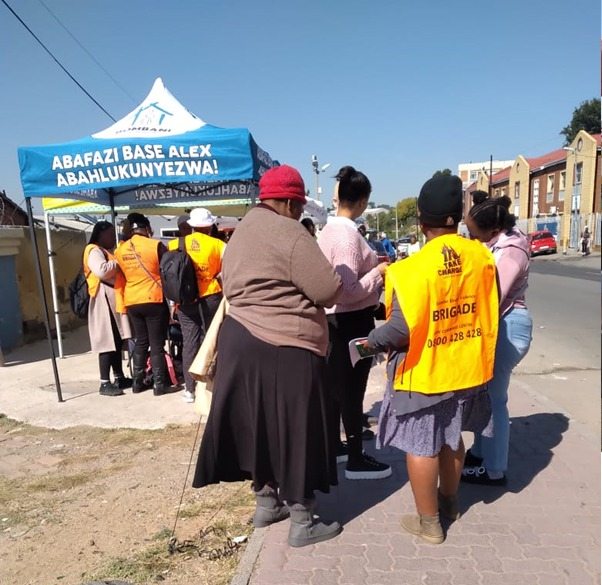

Welcome to Our Website / About US Agisanang Domestic Abuse Prevention and Training (ADAPT) is a section 21 No-Profit organization which was founded in 1994. It started as a small entity focusing on providing counselling for abused women but due to demands from the community of Alexandra Township and its partners. It developed beyond counselling to community education, research, advocacy and lobbying as well as building community support for women through training of officials within various disciplines for abused women and vulnerable girl children. The beneficiaries of this service have expanded to include the youth, men and the elderly. The organization is committed to changing social values and structural factors that perpetuate violence against women by promoting a spirit of interdepence, mutual respect and co-existence between men and women. ADAPT also assists people to deal effectively and efficiently with conflict by giving them the opportunity to explore their human relations and awareness skills. These bring about the possibility of better communication and co-operation between those in conflict.
Vision
Being a Non-Profit Organization of choice in Gender Based Violence awareness and training in
Southern Africa.
Mission
To achieve a society free from Gender Based Violence, through creative participation of all members
of the community.
The organization seeks to achieve its vision and mission through:
Based in Alexandra Township, the organization is particularly concerned with women that are
affected by violence in the home and in the society. ADAPT services are aimed particularly at
reducing the high levels of violence against women and children in Alexandra Township, one of the
most violent townships in South Africa, where women and girl children are constant victims of
Gender Based Violence.
Services Rendered through programmes
Crisis Counselling Programme:
For survivors and perpetrators of gender based violence
Offering individual and group support to survivors of gender based violence, including physical,
sexual and psychological abuse.
Men’s Programme:
Counselling and support services for men, both individual and couples therapy.
Group therapy for abusive men and prisoners convicted of rape and other violence crimes
Gender sensitivity training for men
Criminal Justice System Programme:
Legal counselling for abused women
Court preparation and accompaniment for abused women
Advocacy, monitoring and lobbying
Youth and Schools’ Programme:
Facilitation of workshops for learners and youth
Training programmes for Educators and Learners
Providing gender sensitivity training and life skills education for youth in and out school
Community Education Programme:
Training of Service Providers
Workshops for women and men on Gender Based Violence issue

| Programmes | |
|---|---|
|
Crisis Counselling Programme
This programme involves counselling for women from the age of fourteen (14) years, who are survivors of physical, sexual, emotional and economic abuse. Services provided are individual counselling, couples counselling, marriage counselling, family therapy, and group therapy. |
Youth Programme
This programme aims to create a platform for young people to deal with life-related challenges and pressures. It educates and empowers the youth to recognize and combat gender-based violence. |
|
Men’s Programme
This programme aims to end men’s violent and aggressive behavior towards women and other men. It encourages men to take responsibility for their actions and develop alternative ways of dealing with conflict. |
Criminal Justice System Programme
This programme offers fair, gender-sensitive handling of legal proceedings within the criminal justice system. It provides survivors of domestic violence with court preparation and legal counselling to minimize secondary victimization. |